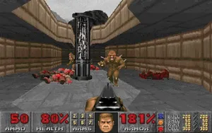
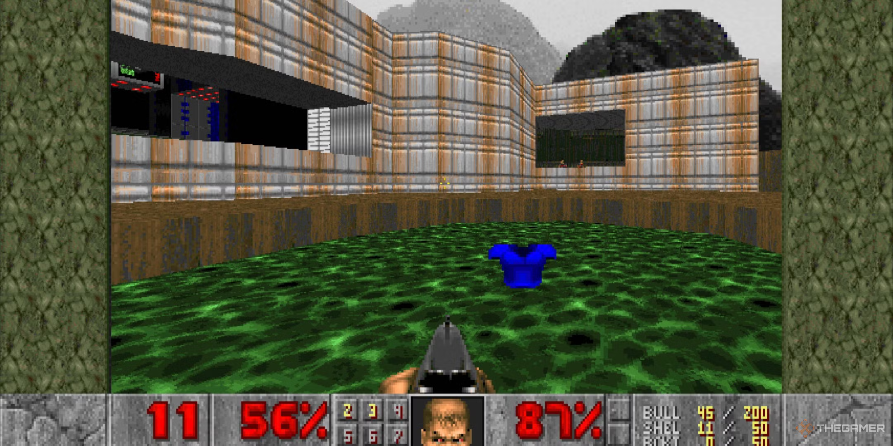
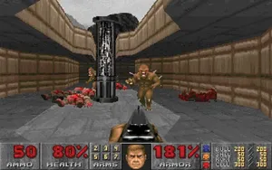
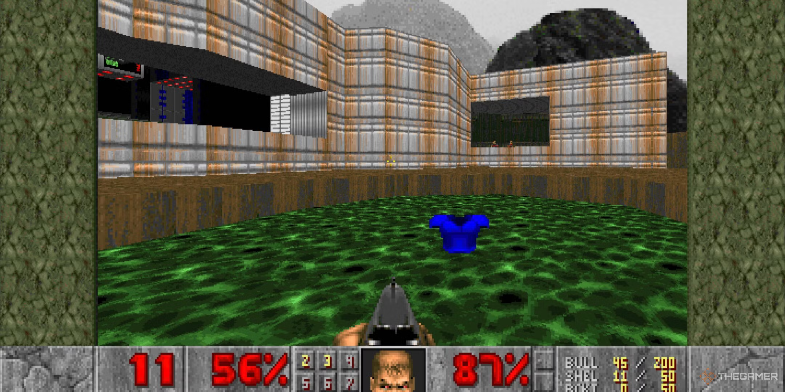

About Doom 1993
Doom is a first-person shooter game developed by id Software released in 1993. It is considered one of the most significant and influential titles in video game history.
Doom was een baanbrekend succes en wordt erkend als een van de meest invloedrijke videogames aller tijden en de "vader" van first-person shooters. Tegen 1999 had het 3,5 miljoen exemplaren verkocht, en naar schatting hebben 20 miljoen mensen het in de eerste twee jaar gespeeld. De gewelddadige inhoud zorgde voor controverse, maar het spel inspireerde veel imitaties, stimuleerde een sterke modding-gemeenschap en leidde tot de opkomst van speedrunning.